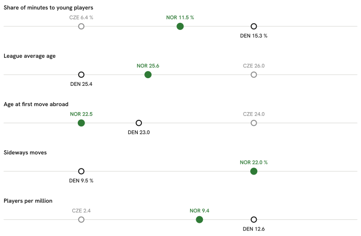

Summary · Question 1 of 14
Five pathway measures: Norway, Denmark and Czechia, 2025/26
Five measures, from youth minutes at home to players in Europe’s top-ranked leagues, for Norwegian football and the two comparison countries used throughout the atlas. Each links to the page with the full evidence. The order follows a player’s path; it is not a causal chain.

-
Playing time for under-21 nationals in the country’s own top league.
Share of league minutes that went to players aged 21 or under
NOR 11.5 % DEN 15.3 % CZE 6.4 %Clubs that gave those young players more than a tenth of their own playing time
NOR 12 of 16 clubs DEN 11 of 12 clubs CZE 9 of 16 clubsUnder-21 nationals who were regular starters, per club in the league
NOR 1.56 per club (25 players) DEN 2.50 per club (30 players) CZE 1.06 per club (17 players)The regular-starter line is drawn at ten starts; at five it is 2.4 per club, at fifteen 0.9 (ten: 1.6).
11.2 % of the league’s starts went to them against 11.5 % of its minutes, so they start about as often as they play at all; in a start they played a median 75 minutes against the league’s 80.
-
The age profile of the home league.
Average age of a minute played in the league
NOR 25.6 DEN 25.4 CZE 26.0Share of league minutes that went to players aged 30 or over
NOR 15.9 % DEN 19.5 % CZE 21.1 % -
Age at the first season with real playing time in a foreign league.
Median age at the first season with real playing time in a foreign league, over the players abroad today
NOR 22.5 years (60 players) DEN 23 years (112 players) CZE 24 years (32 players) -
Moves abroad to a league no stronger than the home league.
Share of players abroad in a league no stronger than their own (UEFA-coefficient multiplier)
NOR 22 % DEN 10 % CZE — -
Players in Europe’s top-ranked leagues per million people.
Players in Europe's top-ranked leagues, for every million people
NOR 9.37 DEN 12.58 CZE 2.39The change-point model’s most probable season for a fall in the count of Norwegian players in the Big-5 is 2004/05 (posterior 27 %), a level change of ×0.66 (90 % HDI 0.29–1.34). The 90 % interval for the fall includes ×1.00, so the fall is not distinguishable from no change at that level. Break & forecast.
In the gap decomposition (descriptive, see its page), the channel with the largest contribution for both Denmark and Czechia is how strong the domestic league is. It describes associations across 8 countries and does not say what would change the gap.
Explore the data
Five pathway measures
Five pathway measures
Four exhibits comparing Norway with 8 peer countries: youth exposure at home, export route, how exports fare, and who made it.
Exhibit A — youth exposure at home
Share of a domestic league's total minutes played by its own nationals aged 21 or under, 2025/26.
* Σ minutes of players with the league country's nationality and age ≤ 21 at the season's start ÷ Σ minutes of all players in the league, 2025/26. Under-23 shares: DEN 21.2 %, HUN 22.6 %, CRO 22.7 %, NOR 19.8 %, AUT 16.5 %, POL 14.4 %, SUI 16.6 %, CZE 13.5 %. A league without a bar is not covered by FBref.
Exhibit B — export route
For every peer-country player on a 2026/27 top-9 roster: the age at the first top-9 season (full roster, and recent entrants only) and, for recent entrants, the league of the season before it. Norwegian exports: 37 players, median export age 21 (recent entrants 17, median 22), 53 % of the recent ones straight from the Eliteserien*.
| Country | n | Recent | Age at first top-9 season (all) | Age at first top-9 season (recent) | Domestic | Stepping stone | Other top-9 | Not covered | Censored |
|---|---|---|---|---|---|---|---|---|---|
| NOR Norway | 37 | 17 | 21 | 22 | 53 % | 0 % | 0 % | 47 % | 19 % |
| DEN Denmark | 65 | 25 | 22 | 22 | 60 % | 0 % | 0 % | 40 % | 14 % |
| SUI Switzerland | 42 | 13 | 23 | 21 | 85 % | 0 % | 0 % | 15 % | 33 % |
| AUT Austria | 37 | 13 | 23 | 22 | 54 % | 8 % | 0 % | 38 % | 35 % |
| CZE Czechia | 15 | 7 | 23 | 22 | 0 % | 0 % | 0 % | 100 % | 20 % |
| CRO Croatia | 39 | 10 | 23 | 24.5 | 60 % | 10 % | 0 % | 30 % | 31 % |
| POL Poland | 30 | 13 | 23 | 24 | 38 % | 23 % | 0 % | 38 % | 20 % |
| HUN Hungary | 18 | 11 | 22 | 22 | 91 % | 0 % | 0 % | 9 % | 11 % |
| SVK Slovakia | 11 | 4 | 24 | 23 | 0 % | 0 % | 0 % | 100 % | 27 % |
* Export age = age at the first season in any headline league, history back to 2020/21; a first appearance already in 2020/21 is censored. Recent entrants: first top-9 season 2025/26 or 2026/27, the only ones whose previous season lies inside the fetched window (2024/25 onwards for peer domestic leagues). Stepping-stone league: GER-2. Bundesliga, the one covered league below the top nine that is no peer’s home league. Not covered: no earlier row in the data.
Exhibit C — how the exports fare
Peer-country players at a top-9 club in 2025/26: median share of the club's minutes, and the club's strength within its league.
Median share of the club’s minutes
Median club goals-scored percentile within its league (club-strength proxy)
* Minutes share = player minutes ÷ (club matches × 90), 2025/26, one row per player-season. Club strength proxy: goals-scored percentile within league — clubs ranked by the goals their own roster scored that season (ClubElo was unreachable at run time). Both are medians over the country's exports; n per country in the bars.
Exhibit D — profile of those who made it
Goals + assists per 90, league-adjusted, in 2025/26 by the tier of the player's own league: domestic, stepping stone, top-9, or another covered league. Norwegian count and median against the median of the peer countries' values.
Profile table by tier and position group
| Tier | Group | NOR n | NOR median | Peer median n | Peer median |
|---|---|---|---|---|---|
| domestic league | FW | 31 | 0.18 | 16.5 | 0.12 |
| domestic league | MF | 72 | 0.10 | 57 | 0.06 |
| domestic league | DF | 76 | 0.04 | 42.5 | 0.02 |
| stepping-stone league | FW | 0 | — | 2 | 0.28 |
| stepping-stone league | MF | 2 | 0.07 | 2 | 0.09 |
| stepping-stone league | DF | 1 | 0.01 | 2 | 0.05 |
| top-9 league | FW | 6 | 0.29 | 5 | 0.28 |
| top-9 league | MF | 23 | 0.13 | 16 | 0.14 |
| top-9 league | DF | 11 | 0.06 | 8 | 0.04 |
| other covered league | FW | 7 | 0.16 | 6 | 0.13 |
| other covered league | MF | 9 | 0.08 | 6.5 | 0.08 |
| other covered league | DF | 3 | 0.02 | 10.5 | 0.02 |
* Tier = the league of the player's own 2025/26 season. Peer median n and peer median are medians across the peer countries present in that tier and group; a tier a country has no player in is absent, not zero.
Exhibit E — where Norwegian exports go
Of the 236 mapped Norwegian players, 59 play outside the Eliteserien.
- top-9
Sondre Ørjasæter · Tobias Lauritsen · Erling Haaland - peer country league
Fredrik Ulvestad · Kristian Arnstad · Robin Dahl Østrøm - stepping stone
Jonas Therkelsen · Jesper Daland - other
Sivert Mannsverk
* Buckets by the league of the player's own 2025/26 season; a player is counted once per position group, like everywhere else on the page, so one with rows in two groups counts in each; the number in front of each bar is the player count, the median multiplier is the bucket's median league multiplier. Sideways: destination league multiplier <= the domestic league's multiplier.
F · The 2026 FIFA World Cup squad by league tier
Where the 26 players named to the 2026 FIFA World Cup squad played in 2025/26, next to Switzerland, Austria, Czechia. Tier = the league of the player's most-minutes 2025/26 row.
Minutes, multipliers and age cohorts by country
| Country | Median minutes | Median multiplier | U22 | 23–25 | 26–29 | 30+ |
|---|---|---|---|---|---|---|
| NOR Norway | 2164.5 | 0.832 | 2 | 6 | 14 | 4 |
| SUI Switzerland | 2132 | 0.788 | 1 | 5 | 10 | 10 |
| AUT Austria | 1711.5 | 0.788 | 1 | 6 | 10 | 9 |
| CZE Czechia | 1826.5 | 0.434 | 1 | 6 | 10 | 9 |
* 6 of the 104 squad players across the 4 countries have no 2025/26 row in the fetched leagues and are counted as unmatched (NOR 4, SUI 0, AUT 2, CZE 0).